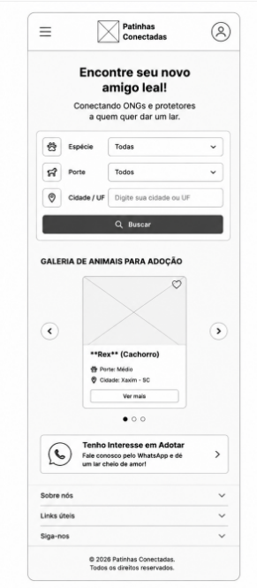
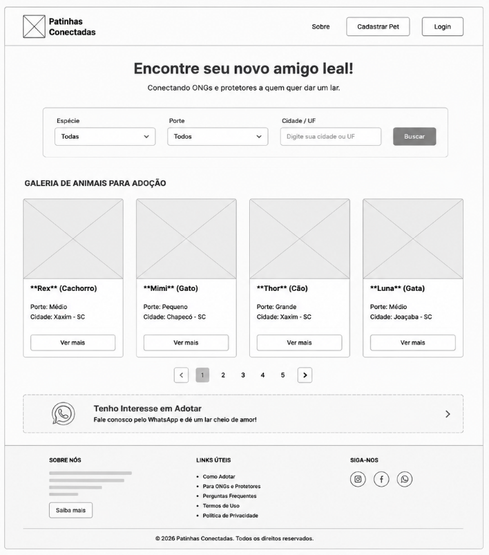

1. Nome do Site
Nome do Site: Patinhas Conectadas 🐾
Disponibilidade de Domínio: patinhasconectadas.org (ou patinhasconectadas.com.br)
Justificativa da Escolha: A ideia do nome "Patinhas Conectadas" busca transmitir a união entre a tecnologia e o propósito social de aproximar animais de estimação que precisam de um lar, a potenciais adotantes e protetores independentes/ONGs.
2. Finalidade do Site
O Patinhas Conectadas é uma plataforma digital voltada para desburocratizar e acelerar o processo de adoção responsável de cães e gatos. O site oferece um painel de gerenciamento para doadores e ONGs cadastrarem seus animais, além de uma interface de busca pública com filtros, para que os adotantes encontrem um pet e entrem em contato direto via WhatsApp com os responsáveis.
3. Cenários
Perguntas frequentes que o público-alvo fará ao visitar o site:
- Cenário 1 (Adotante): "Como faço para encontrar um cão de porte pequeno para adoção na minha cidade e entrar em contato com a ONG?"
- Cenário 2 (Doador/ONG): "Como posso cadastrar as fotos, idade e história de um animal resgatado para disponibilizá-lo para adoção no site?"
4. Esquema de Cores
O esquema de cores selecionado busca uma identidade acolhedora e amigável:
5. Tipografia
Fontes selecionadas para garantir legibilidade e boa hierarquia visual:
-
Títulos (Headings):
Montserrat (Sans-Serif)
— Aplicada em cabeçalhos (
<h1>,<h2>,<h3>) para dar destaque e tom moderno. - Corpo do Texto (Body): Open Sans (Sans-Serif) — Aplicada em parágrafos, listas e descrições dos pets para garantir leitura confortável.
6. Wireframes
Abaixo estão os esboços do layout da página inicial para dispositivos móveis e telas amplas (desktop):
Visualização Mobile (Tela Pequena)

Visualização Desktop (Tela Ampla)
